995c5fa3.json
Navigation
Train Examples


Test Example


Participant 1
Initial description: There are several patterns in the input that correspond to various colors. Where there is a black "I" pattern, then the corresponding output is a 1x3 line that is green. When there is a gray square pattern with a black square center, then the output is a 1x3 line that is cyan. When there is a 4x4 section of a pattern with a 2x2 black square at the bottom, it corresponds with a 1x3 line that is yellow. The left pattern goes in the upper 1x3 output line, the center pattern in the center 1x3 output line, and the right pattern in the lower 1x3 output line.
Final description: There are several patterns in the input that correspond to various colors. Where there is a black "I" pattern, then the corresponding output is a 1x3 line that is green. When there is a gray square pattern with a black square center, then the output is a 1x3 line that is cyan. When there is a 4x4 section of a pattern with a 2x2 black square at the bottom, it corresponds with a 1x3 line that is yellow. The left pattern goes in the upper 1x3 output line, the center pattern in the center 1x3 output line, and the right pattern in the lower 1x3 output line.

Participant 2
Initial description: I outlined boxes around the black ones and painted them gray.
Final description: Create a complete horizontal and vertical red line from each red square, and then color the enclosed squares blue.
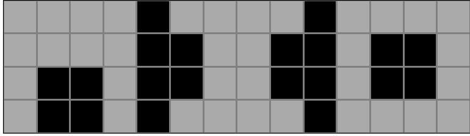
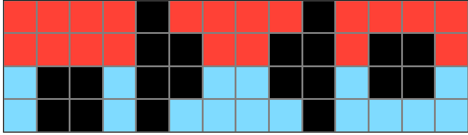

Participant 3
Initial description: the grid is split into three sections, which identifies the color for each horizontal stripe of the 3 x 3 grid. (left = top, center = center, bottom = right). a blank grid is orange, a centrally positioned square is blue, a square touching the bottom is yellow, and two small rectangles is green.
Final description: the grid is split into three sections, which identifies the color for each horizontal stripe of the 3 x 3 grid. (left = top, center = center, bottom = right). a blank grid is orange, a centrally positioned square is blue, a square touching the bottom is yellow, and two small rectangles is green.

Participant 4
Initial description: A solid block of gray corresponds to a row of red, a square of four blacks corresponds to yellow, a line of two blacks corresponds to a line of green, and a line of four blacks is blue.
Final description: I thought each four by four square in the input (the black vertical rows delineate these quadrants) had a pattern that corresponded to the different colors; all gray = red, a black square in the center = yellow, black square on the bottom = light blue, and the two separated lines of black = green.
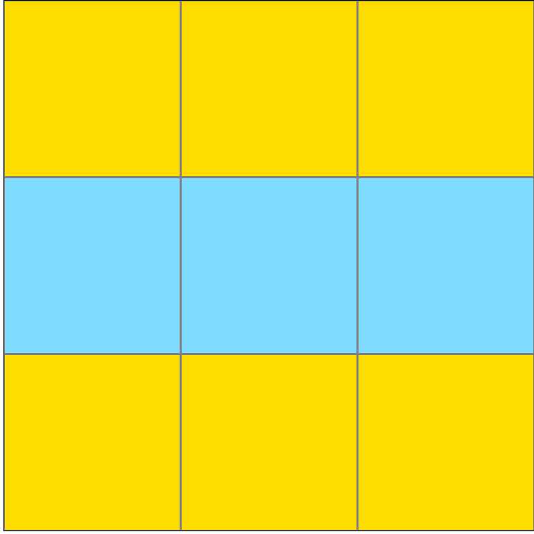
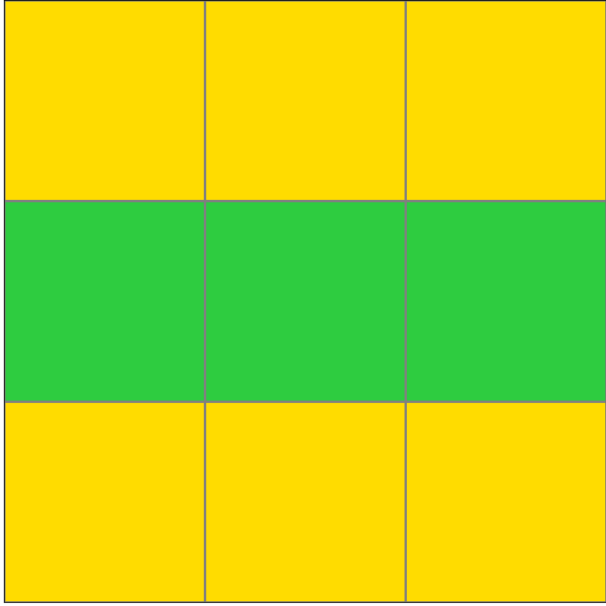

Participant 5
Initial description: The test input corresponded to a code. The top line row would correspond to the first code, which in this case it was blue. The second row corresponded to the second bit of code, which in this case was green, and the last row corresponded to the last bit of code, in this case it was blue.
Final description: The test input corresponded to a code. The top line row would correspond to the first code, which in this case it was blue. The second row corresponded to the second bit of code, which in this case was green, and the last row corresponded to the last bit of code, in this case it was blue.
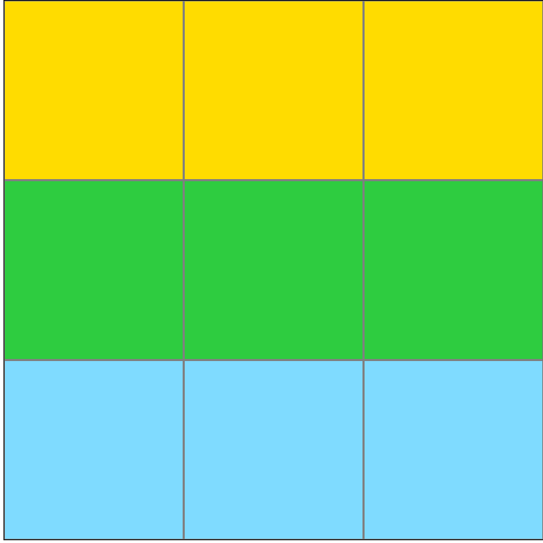
Participant 6
Initial description: Each set of black squares on the input has it's own corresponding color. Each row on the output gets colored following the design on the input.
Final description: Each set of black squares on the input has it's own corresponding color. Each row on the output gets colored following the design on the input.

Participant 7
Initial description: i cannot figure this one out
Final description: i couldnt figure it out, three rows of horizntal strpies but couln't get to correlate
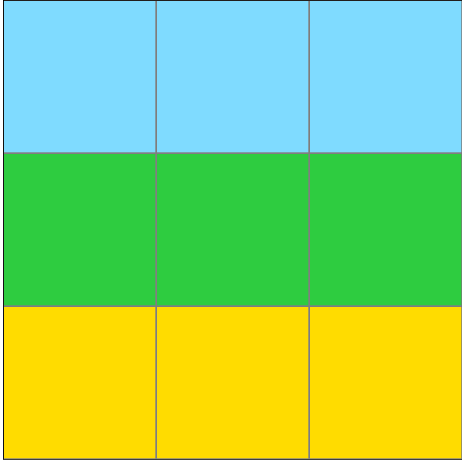
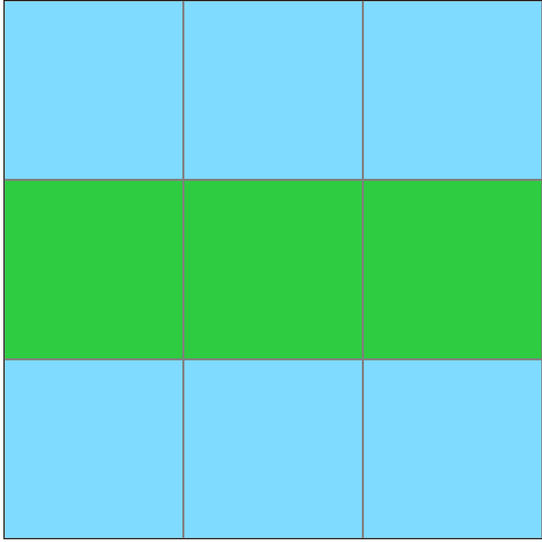
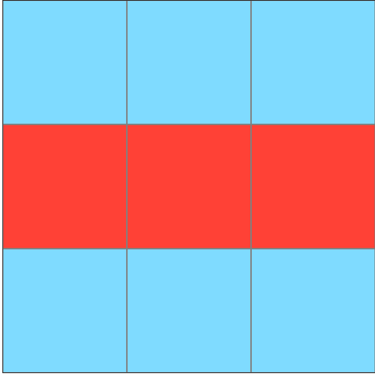
Participant 8
Initial description: I have no idea what the rule is. I'm completely guessing and am pretty confused.
Final description: I realized that the grey spaces on the test input corresponded to a certain color. I used the example inputs on the left to "look up" which grey shape represented which color.
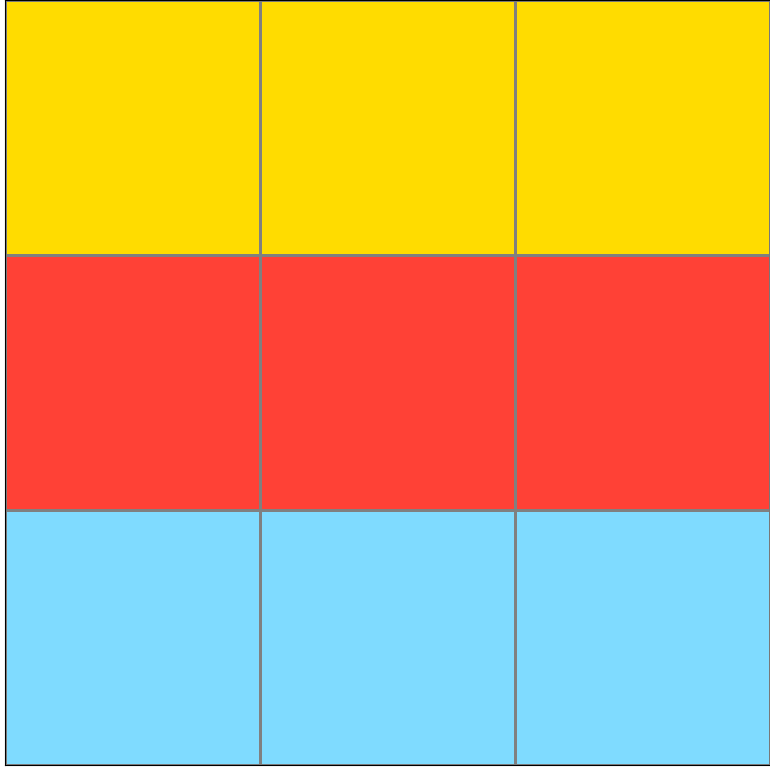

Participant 9
Initial description: Different Input shape/shape patterns, and their positions, serve as instructions for what color of stripe to put in the output grid, and on which of the three output rows. Left in the input corresponds to the top row in the output, middle in the input corresponds to middle in the output, and right in the input corresponds tothe bottom row in the output. A simple vertical line on input means that a red line should be placed on the output, a "floating box in the input means that a light blue row should be placed on the output, a sideways hat shape with 2-piece rectangle next to it means that a green strip should be placed on the output, and so on. It may be just symbolic language, for example, I could make up a language in which A means 1, B means 2, etc.
Final description: Different Input shape/shape patterns, and their positions, serve as instructions for what color of stripe to put in the output grid, and on which of the three output rows. Left in the input corresponds to the top row in the output, middle in the input corresponds to middle in the output, and right in the input corresponds tothe bottom row in the output. A simple vertical line on input means that a red line should be placed on the output, a "floating box in the input means that a light blue row should be placed on the output, a sideways hat shape with 2-piece rectangle next to it means that a green strip should be placed on the output, and so on. It may be just symbolic language, for example, I could make up a language in which A means 1, B means 2, etc.

Participant 10
Initial description: I SELECT BASED ON THE EXAMPLE
Final description: I SELECT BASED ON THE EXAMPLE
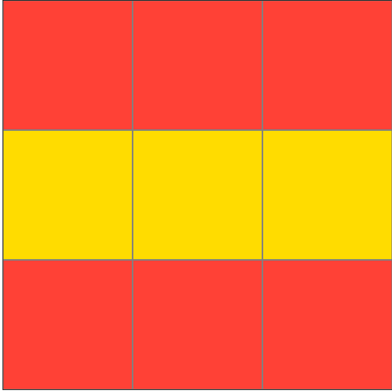
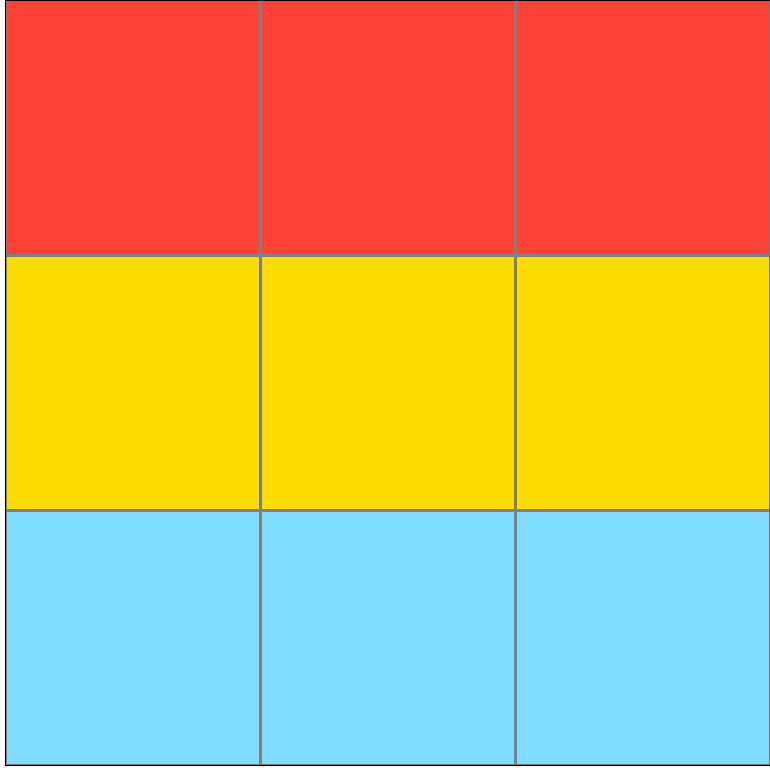

Participant 11
Initial description: The vertical black bars divide the grid into thirds and each third represents a color for the output row, from left to right. A 2x2 square touching the bottom indicates yellow, two 1x2 rectangles on the left and right edge indicate green, a 2x2 square in the center represents light blue, and no shape represents red.
Final description: The vertical black bars divide the grid into thirds and each third represents a color for the output row, from left to right. A 2x2 square touching the bottom indicates yellow, two 1x2 rectangles on the left and right edge indicate green, a 2x2 square in the center represents light blue, and no shape represents red.

Participant 12
Initial description: excellent
Final description: excellent